| ||||||||||||||
| 1997 | 1998 | 1999 | 2000 | 2001 | 2002 | 2003 | 2004 | 2005 | 2006 | 2007 | 2008 | 2009 | 2010 |
|
◎ FEDXP・2009忘年会開催 日本の全国的なDXグループ、FEDXPの2009年忘年会が12月19日(土)、東京都品川のゲートシティー大崎2Fの「日本海庄」で1730時から行われた。 当日はJA4．5からの参加者を含む27人が参加、今年一年のDXハンティングの話題で盛り上がった。 大会が始まる前に、長年FEDXPのメンバーとして活躍されていたJA1BLC・吉町さんが12月12日に亡くなられたとの訃報が報告され、 参加者全員が一分間の黙祷で弔意を捧げた。 吉町さんは長年6mでもアクティブに活躍されたDXerの一人ですが、亡くなられる寸前まで無線を楽しんでいた様子で、 ご家族に発見された時にはRIGにスイッチが入っていたままだったとの事。 忘年会の行事で恒例になっている会報への「ベストレポート賞」の発表が行われ、今回は12ヶ月連続投稿した12局に皆勤賞のグリーンスタンプ5枚($5)が贈られた。 リポートの中からもっとも有益な話題を投稿された局に送られる「ベストレポート賞」にはJA4DND・松浦さんが選ばれグリーンスタンプ20枚($20)が贈られた。 続いて、毎日曜日の0730JSTから行われているFEDXPのオンエアーミーティングの「ベストチェックイン賞」が発表され、 2008年12月14日～2009年12月12日までに52回実施されたミーティングに、50回と最も多くチェックインしたJA1CCO・松山さんに賞品としてグリーンスタンプ20枚(＄20)が贈られた。 最後に、特別賞として、先に行われたグロリオソ(FT5GA)のDX-Peditionと160mでJAから唯一局だけQSOに成功して、 初のFR/G-JAファーストエバーを記録したJA4DND・松浦さんに、 提案者のJA1ANR ・石原さん(有志からの基金含む)から記念品としてGHD製マニュピレーターが贈られ、今年のミーティング公式行事を終えた。 飲み会に入ってからは"59オーバー"のラグチューが時間延長で終了した2100時まで続いていた。 |
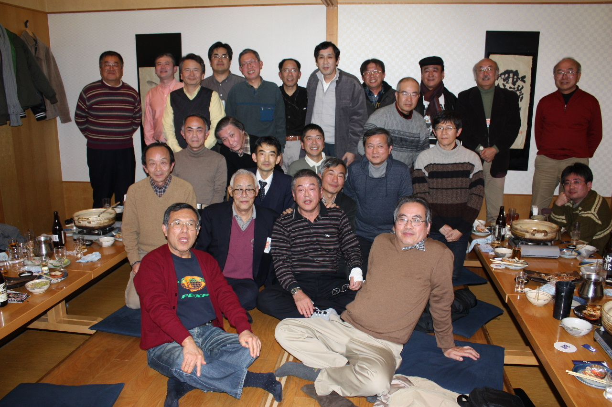
《 2009・FEDXP忘年会参加局(順不同) 》 7N4TJR.JA1CCO.JH1XUP.JA1HGY.JR1MLU.JA1WPX.JA4DND.JA1OND.JA1BRK JA1UQP.JA1DUH.JA1ANR.JA1ALT.JA1RJU.JA1UPT.JA4LKB.JA1DOT.JK1OPL JH6RTO.JE1SYN.JP1IOF.JL1WPQ.JF2XGF(ゲスト:JA1NXK.JE1SPY.JA4PXC)
|
◎ 第38回東北6SGミーティング・秋田県田沢湖大会開催 第38回東北6SGミーティングが2009年9月19日-20日の両日、秋田県仙北市田沢湖生保内字駒ケ岳2-36のプラトーホテルで開催された。 Esシーズンの北米、ヨーロッパのオープンの時期をはずして、9月に開催時期を延期して行われているミーティングも今回で3年目を迎えた。 期待されたサイクル24の太陽活動も上昇の気配すら見られない状況下で、いまひとつ盛り上がりに欠けた6mバンドながら、 この日、田沢湖高原に駆けつけた参加者は、年に一度の"アイボールQSO"を楽しんだ。 |
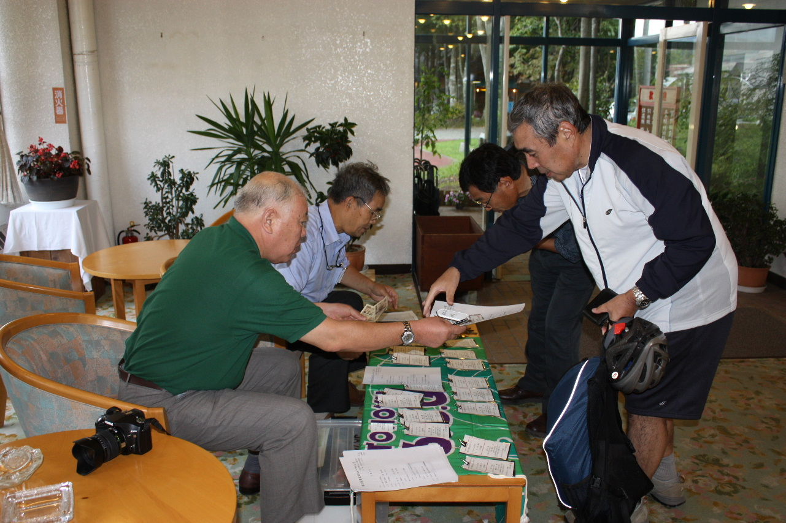
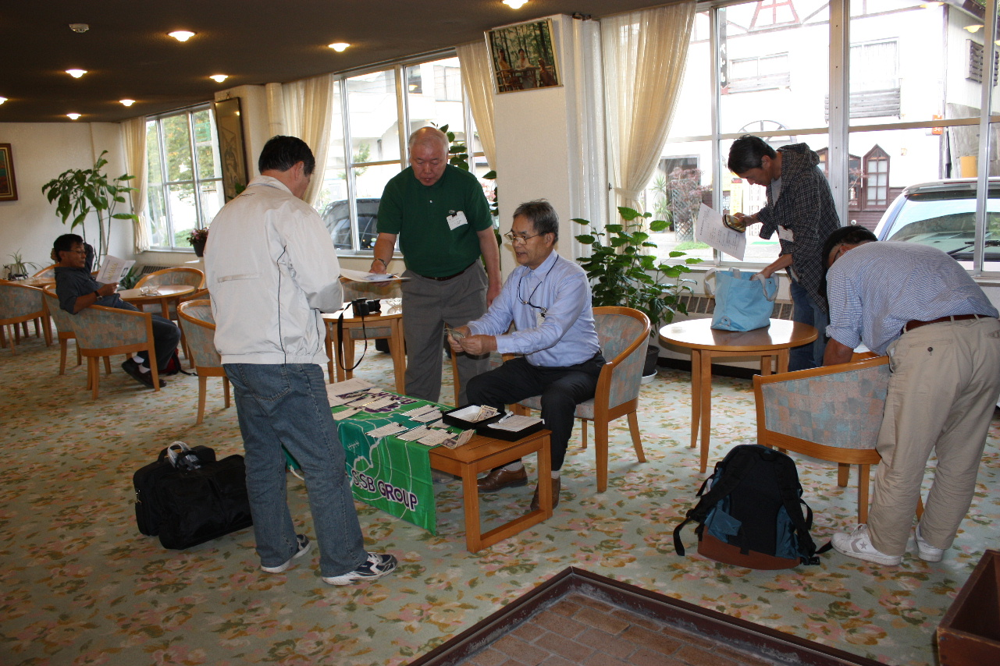
|
今回のミーティングは、9月には珍しく5連休の初日に行われたため、思わぬ交通渋滞に巻き込まれ到着が遅れたメンバーも見られたが、
懇親会は予定通り18:00時から、ホテル内の"郷土料理フロアー"で始められた。
幹事役のJA7AGL・相沢さんの歓迎の言葉に続いて、山形から参加のJA8CRB/7・渡辺さんの乾杯の後、
"炉ばた"を囲んで地元・秋田の名物郷土料理・キリタンポ鍋を堪能した。 参加者の自己紹介など、ミーティングの"公式行事"は別室に場所を移しての二次会で行われた。 |
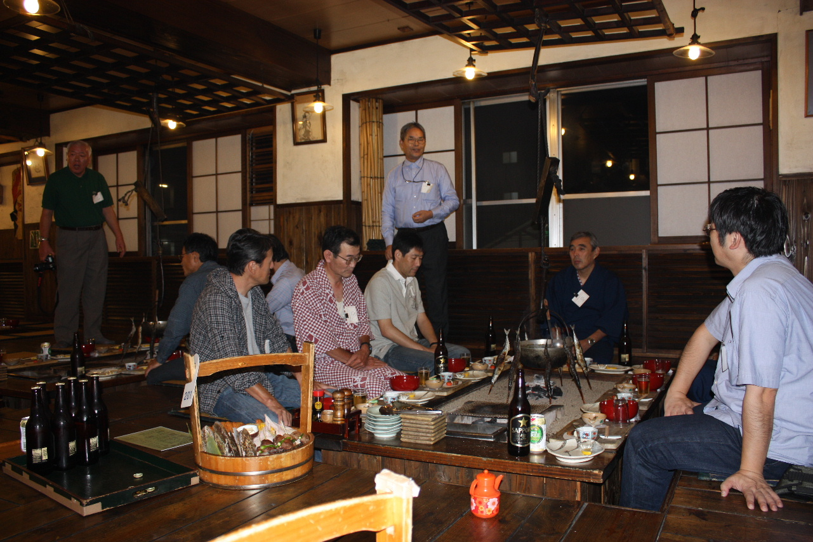
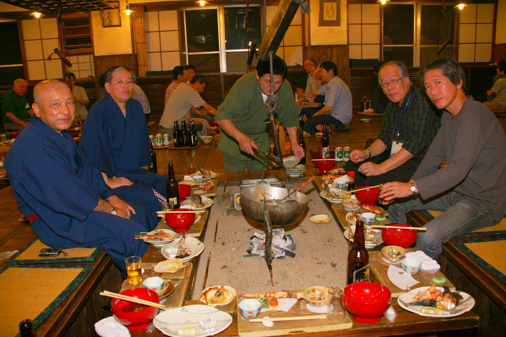
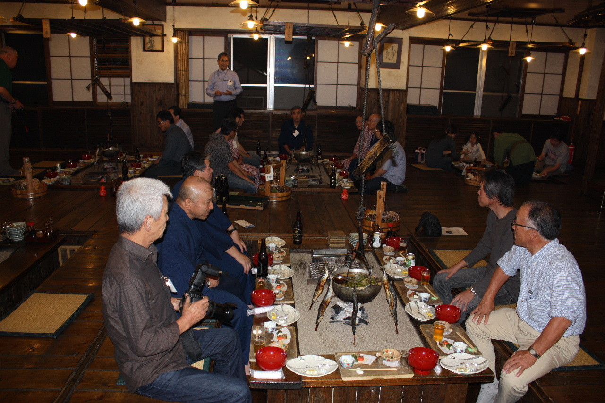
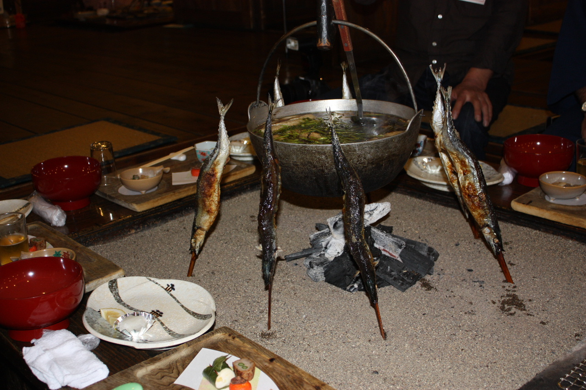
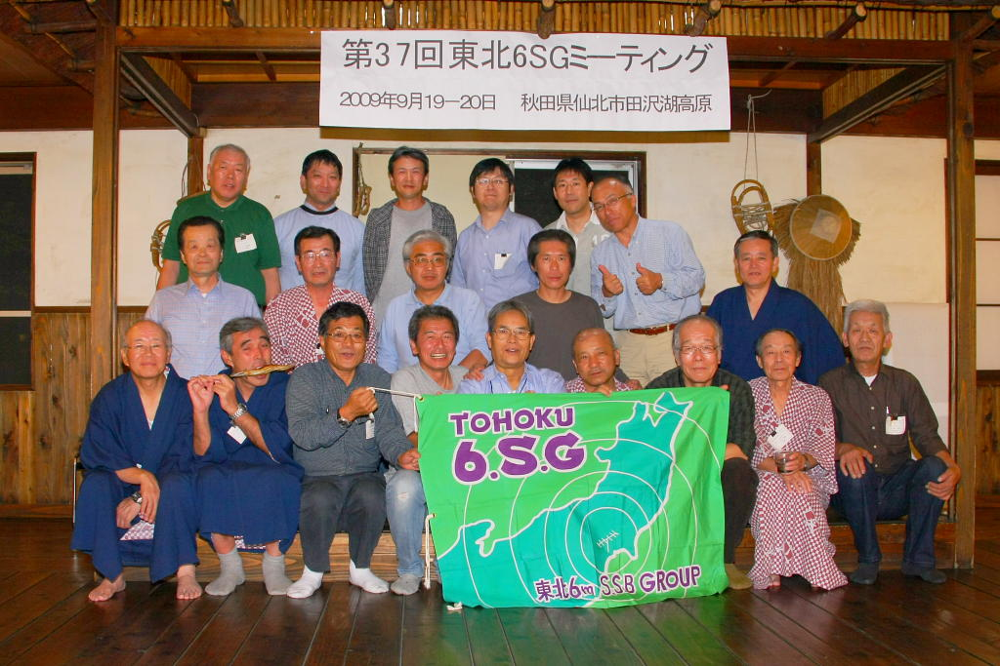
|
翌9月20日(日)の講演会は、客室の一室を利用して午前9時から始まった。 最初は、昨年に引き続き、今夏のEsシーズンで活躍されたJA7QVI・平間さんから、北米の東海岸・カリブ海のHI3(ドミニカ)を含む、 北米全域のオープンの模様が報告された。 特に、従来のQSOではF2だけだったカナダ東部のVE2や、北米東海岸のW1の全州(6州)と、W2～W4から北米中部、 XE2Dを含む北米西海岸までの全エリアとのQSOの模様が、スライドと当時の録音を交えて紹介された。 今夏のEsシーズンでの"新しいQSO記録達成"に、参加者からは驚嘆の声が上がった。 続いてJA7AGL・相沢さんから、最近、HF帯でも注目されている14MHz～50MHzまで1本の同軸ケーブルで使える、 SteppIRのマルチバンダー3ELアンテナに50MHz帯専用のエレメントを付加して7EL化する改造方法の紹介と、 アンテナ・シュミレーションソフト「MMANA」による自作アンテナ設計の具体的な使い方が紹介された。 最後は、JA1RJU/JA7JUから「フィリピンに於けるEME運用の報告」が、2008年のDX0EME(144/435MHz)の運用紹介と、 EME関連でフィリピン本土から運用した、2006年のDZ1JP(EME＝50/144MHz)、 フィリピン・スプラトリーのDX0JP(EME＝50/144/435MHz)のDXペディションの模様を交えて紹介された。 ミーティングの最後は、次期開催地として「2010年・岩手」と「2011年・山形(暫定)」の開催を確認後、 "6SGの旗"が秋田の幹事(JA7AGL)から岩手の幹事(JH7XRZ)に引き継がれ、2009年秋田大会は無事終了した。 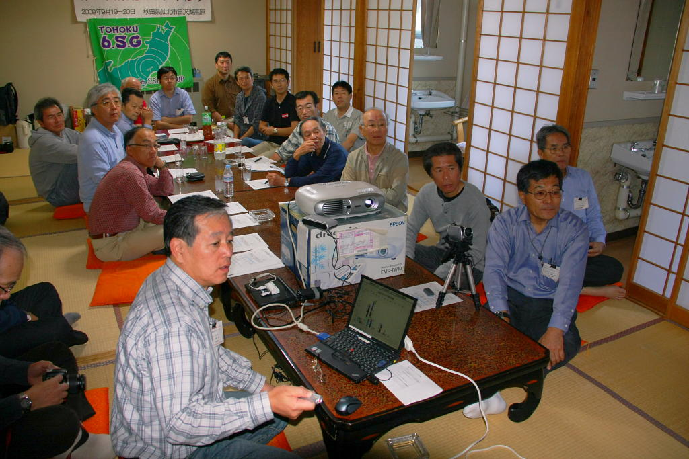 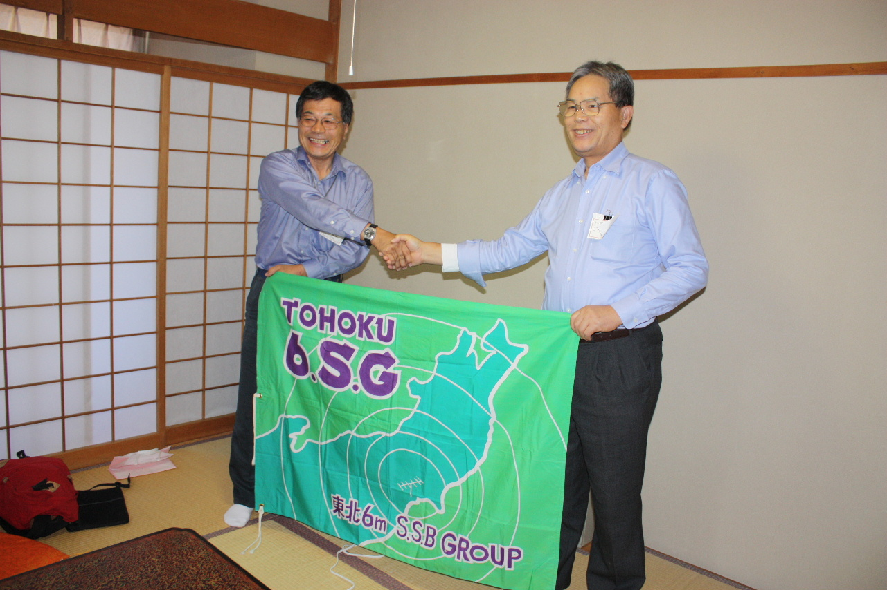 スライドで北米東部のW1の全州(6州)とのQSOを報告するJA7QVI(左) 6SGの旗は秋田から次期開催地の岩手に引継がれた。
【 第38回東北6m SSB Group ミーティング参加者 】
JA7AGL.JA7AHK.JA7EIQ.JA7JWF.JA7KHQ
JA7QVI.JA7WSZ.JH7CRL.JH7JGM.JH7MQU
JH7UPW.JH7XRZ.JE7CAI.JG7BBO.JR7XGL
JA1RJU.JL1PND.JO1PSX.JA8CRB/7
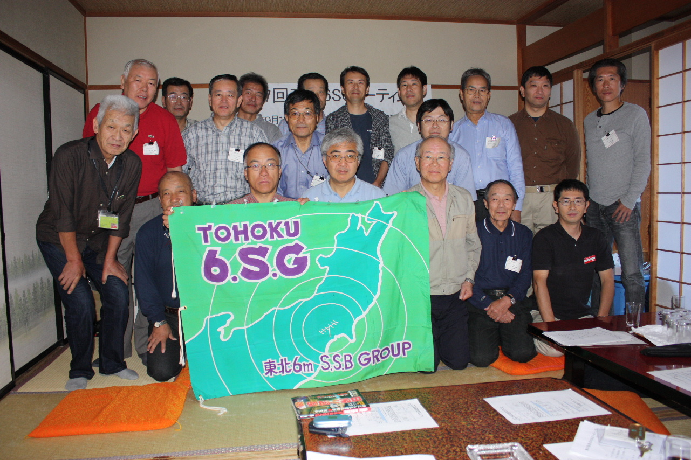 第38回東北6SGミーティングに参加した各局 |
---------------------------------------------------------◎ 第38回東北6SGミーティング開催のご案内(2009.09.10) |